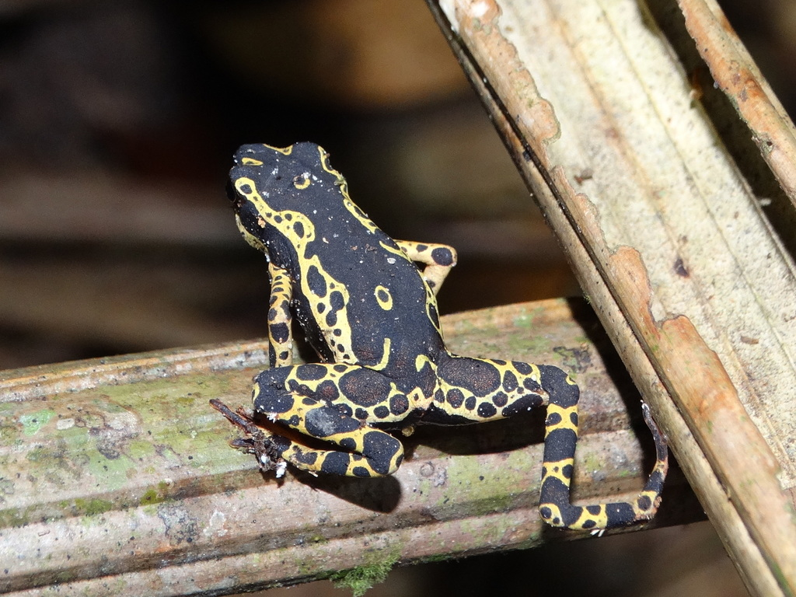

Os sapos são membros da família Bufonidae, pertencente à ordem Anura (rãs e sapos). Eles são a única família de anuros cujos membros todos são conhecidos como "sapos". Os bufonídeos
Atelopus hoogmoedi
Pode ser encontrada na Guiana, Suriname, Guiana Francesa e Brasil, nos estados de Roraima, Amapá e Pará ou seja bioma Amazônia.
Regulação de água
Os anfíbios não ingerem água, ela é obtida através da pele, que também executa a troca gasosa entre o sangue e o ar. É rica em glândulas e está sempre úmida.
Regulação de temperatura
Os anfíbios são ectotérmicos, ou seja, sua temperatura corporal é regulada pela temperatura do meio ambiente. Portanto, o habitat perfeito dos anfíbios é necessariamente úmido.
Sistema Respiratório
Os sapos apresentam duas fases de vida: A fase larval, em ambiente aquático, quando realizam a respiração branquial, e a fase adulta, em ambiente terrestre, quando realizam a respiração pulmonar e a respiração cutânea. Os anfíbios possuem três estruturas para a respiração: os pulmões, as mucosas da faringe e da boca, e a pele. Os pulmões são constituídos de duas bolsas sem divisão interna. Quando ainda em fase larval, respiram por brânquias.
Sistema Circulatório
O sistema circulatório dos anfíbios é um sistema fechado, ou seja, o sangue circula pelo corpo dentro de vasos. A circulação se dá de forma dupla (pois o sangue passa duas vezes pelo coração) e incompleta, já que o sangue venoso e o sangue arterial se misturam. No que diz respeito ao coração dos anfíbios, ele é dividido em três cavidades: dois átrios e dois ventrículos.
Sistema Nervoso
O cérebro dos anfíbios é bem desenvolvido e dividido em três partes sendo cada uma responsável por um sistema sensorial (telencéfalo para o olfato; mesencéfalo para a visão; rombencéfalo para audição e equilíbrio). A espinha dorsal é responsável por transmitir a mensagem do cérebro para os demais membros e partes do corpo por meio de nervos. As larvas dos anfíbios e algumas salamandras adultas usam o sistema de linha lateral remanescente para sentirem o ambiente a sua volta. Já os outros anfíbios adultos usam o olfato (canais nasais se abrem na cavidade bucal), audição (ouvido interno com membrana timpânica), além da visão (olhos com pálpebras e glândulas lacrimais) para captar os acontecimentos. A pele dos anfíbios produz secreções utilizadas para defesa.
Sistema digestório
Os anfíbios possuem um sistema digestório completo e realizam digestão extracelular. Embora muitos anfíbios possuam duas fileiras de dentes, esses animais não mastigam suas presas. Grande parte delas (insetos, por exemplo) são capturadas pela língua, que lubrifica o alimento para que ele seja engolido com mais facilidade.
Os sapos alimentam-se de aranhas, besouros, gafanhotos, moscas, formigas e cupins. Algumas espécies maiores podem comer pequenos pássaros e até mesmo outros sapos.
Lomovem-se preferencialmente aos pulos, mas podem também marchar, como que engatinhando. Em geral vivem numa área muito restrita e se alimentam de qualquer inseto ou animal pequeno que consigam apanhar. A maioria permanece em sua toca durante o inverno e a estação seca. A Ordem Anura, onde estão inseridos os sapos, as rãs e as pererecas, é caracterizada pela ausência de cauda e por apresentar membros posteriores alongados, que os auxiliam na locomoção por saltos. Os sapos alimentam-se de aranhas, besouros, gafanhotos, moscas, formigas e cupins. Algumas espécies maiores podem comer pequenos pássaros e até mesmo outros sapos. O sapo captura suas presas através da língua, bastante ágil e extensível. A língua é ainda pegajosa e faz com que o alimento fique grudado até ser levado para o interior da boca. Um fato curioso é que o sapo fecha os olhos para engolir o alimento. Isso porque os grandes olhos são forçados para cavidade bucal e ajudam a empurrar os alimentos para baixo da garganta. Os sapos não têm dentes fortes, apenas um serrilhado frágil e, portanto, não mordem ou mastigam os animais que constituem sua dieta. Eles utilizam sua língua que é elástica (fixada na parte da frente da boca, na maioria das espécies) para capturar sua presa em potencial. Quando o sapo vê a presa, ele se aproxima ou espera que o inseto fique a uma distância suficiente para que a língua dele alcance o alimento. Então, o sapo projeta seu corpo e lança sua língua, que tem a ponta pegajosa para que o inseto fique grudado. Em seguida, o sapo retrai a língua, puxa o inseto para dentro da boca e o engole inteiro, sem mastigação.
Glândulas de veneno na pele (paratóides)
Coloração de advertência (aposemática)
Como sabemos, os anuros, grupo de anfíbios representado pelos sapos, rãs e
pererecas, têm o seu apogeu na primavera, uma vez que nos meses mais frios de outono e
inverno existem espécies que mantém um metabolismo baixo e algumas até podem hibernar.
O Brasil, por ter grande parte do seu território próximo à linha do Equador, possui muitas
regiões onde a vida reprodutiva dos anfíbios se mantém em todos os meses do ano, com destaque
para as regiões Norte e Nordeste. No entanto, nas regiões Sul, Sudeste e parte da Centro-Oeste,
os meses de primavera e verão são responsáveis pela migração de diversos grupos de anuros e pela
renovação das suas populações. OUÇA O CANTO DE ACASSALAMENTO DOS SAPOS!
Quando chega a estação de reprodução nos banhados, brejos e lagoas, no verão e nas noites chuvosas,
ouve-se a cantoria dos machos. Estão dando um recado muito importante: "Eu tenho um território e
quero namorar". O macho de cada espécie canta na sua própria "linguagem" que é para a fêmea da espécie
não se confundir. Essa diversidade é divertida para o nosso ouvido: o som de um se parece a um mugido,
do outro a um assobio, e de outro a um grilo!. Para os biólogos a
especificidade de cada canto é uma boa dica para identificá-los. À noite, sem os enxergar, os peritos
descobrem quais espécies vivem numa determinada área, só pelo canto. Como os filhotes precisam da
água para se desenvolverem, sapos, pererecas e rãs cantam sempre dentro ou próximo a corpos d'água.
Para as fêmeas o canto é tão irresistível que são atraídas na hora. Quando o casal se forma, o macho
dá um abraço bem apertado na fêmea pelas costas, e os dois desovam juntos.
Com o abraço a fêmea libera centenas de gametas femininos (óvulos) e o macho, milhões de gametas
masculinos (espermatozóides).
Como nos peixes ovíparos, a fertilização é externa e o ovo que foi fecundado desenvolve-se fora do
corpo da mãe. Dependendo da espécie de anfíbio anuro, os ovos são depositados na água, sob pedras,
dentro de uma toca escavada no chão, em folhas, etc. O importante é que haja bastante umidade, o
suficiente para o embrião crescer e transformar-se em girino (nome dado à larva dos anuros).
Quando sai do ovo, o girino já nada e procura o seu próprio alimento mas para se protegerem de
predadores ficam agrupados em grandes cardumes (veja uma imagem). Os pais de anfíbios anuros são
muito cuidadosos com a prole e procuram garantir locais seguros para que ela se desenvolva. Os
girinos crescem preparando-se para a vida fora da água: primeiro surgem o par de pernas traseiras,
depois as dianteiras, a cauda vai sendo perdida e, finalmente, a preparação para respirar fora da
água.